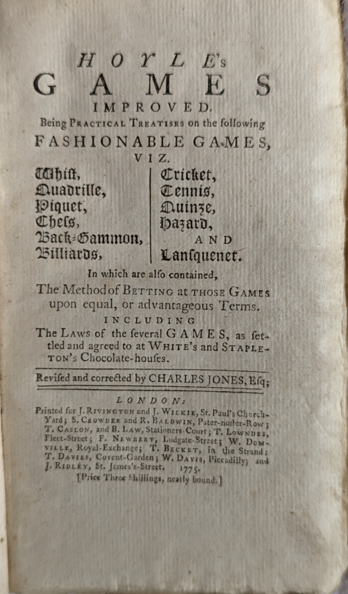

A Descriptive Bibliography of Edmond Hoyle
Copyright © 2014-26 by David Levy
(page updated 2023-11-18)User Guide
Jones.1
Hoyle's Games Improved, printed for J. Rivington et al, first London edition, 1775.
 |
Title: | HOYLE’s | GAMES | IMPROVED. | Being Practical Treatises on the following | FASHIONABLE GAMES, | VIZ. | [6 lines to left of rule] Whiſt, | Quadrille, | Piquet, | Cheſs, | Back=Gammon, | Billiards, | [6 lines to right of rule] Cricket, | Tennis, | Quinze, | Hazard, | AND | Lanſquenet. | In which are alſo contained, | The Method of Betting at those Games | upon equal, or advantageous Terms. | INCLUDING | The Laws of the ſeveral GAMES, as ſet-|tled and agreed to at White's and Staple-|ton's Chocolate-houſes. | [rule] | Reviſed and corrected by CHARLES JONES, Eſq; | [double rule] | LONDON: | Printed for J. Rivington and J. Wilkie, St. Paul’s Church-|Yard; S. Crowder and R. Baldwin, Pater-noſter-Row; | T. Caslon, and B. Law, Stationers-Court; T. Lowndes, | Fleet-Street; F. Newbery, Ludgate-Street; W. Dom-|ville, Royal-Exchange; T. Becket, in the Strand; | T. Davies, Covent-Garden; W. Davis, Piccadilly; and | J. Ridley, St. James’s Street. 1775. | {Price Three Shillings, neatly bound.} |
| Collation: | 12o: a6 B–K12 L6 [$½ signed]; 120 leaves, pp. [i–ii] iii–xii, [1–2] 3–91 [92] 93–114 [115] 116–125 [126] 127–153 [154] 155–169 [170–171] 172–201 [202] 203–214 [215] 216–220 [221] 222 [223] 224–226 [227] 228 [misprinting 211 as 111] |
| Contents: | Signature (Page) Reference | Contents | Signature (Page) Reference | Running Titles |
| a1r (i) | title | |||
| a1v (ii) | blank | |||
| a2r–a6v (iii–xii) | ‘[row of type orn] | CONTENTS. | [...]’ | a2v–a6v (iv–xii) | ‘The CONTENTS’ | |
| B1r (1) | ‘THE | GAME OF WHIST. | [...]’ | |||
| B1v–E1v (2–74) | ‘[triple rule] | THE | GAME AT WHIST; | By EDMOND HOYLE, Gent. | [...]’ | B2v–E10r (4–91) | ‘The Game of WHIST.’ | |
| E2r–E10r (75–91) | ‘The following MAXIMS for WHIST, | by Mr. William Payne, are now | added, by Permiſſion of the Proprietor. | [...]’ | |||
| E10v–F9v (92–114) | ‘THE | GAME of QUADRILLE, | By Mr. HOYLE. | [...]’ | E11r–F9v (93–114) | ‘The Game of QUADRILLE.’ | |
| F10r–G3r (115–125) | ‘THE | GAME OF PIQUET. | [...]’ | F10v–G3r (116–125) | ‘The Game of PIQUET.’ | |
| G3v–H5r (126–153) | ‘[triple rule] | Mr. HOYLE's Rules | FOR THE | GAME OF PIQUET. | [...]’ | G4r–H5r (127–153) | ‘The Game of PIQUET.’ | |
| H5v–H7r (154–157) | ‘INTRODUCTION | TO THE | GAME OF CHESS. | [...]’ | H6r–I1r (155–169) | ‘The Game of CHESS.’ | |
| H7r–I1r (157–169) | ‘[...] | Rules and Observations | FOR | CHESS. | By Mr. HOYLE. | [...]’ | |||
| I1v (170) | ‘INTRODUCTION | TO THE | GAME OF BACK-GAMMON; | With the moſt approved Method of playing at it. | [...]’ | |||
| I2r–K5r (171–201) | ‘[triple rule] | TREATISE OF BACK-GAMMON. | By Mr. HOYLE. | [...]’ | I2v–K5r (172–201) | ‘The Game of BACK-GAMMON.’ | |
| K5v–K9v (202–210) | ‘THE | GAME OF BILLIARDS, | With the Rules and Odds: | Likewiſe the different Kinds of Games played on a | Billiard Table. | [...]’ | K6r–K9v (203–210) | ‘The Game of BILLIARDS.’ | |
| K9v–K11v (210–214) | ‘[...] | Printed by Permiſſion of Mr. Ridley, in St. | James's Street. | [rule] | THE | LAWS of CRICKET; | Reviſed at the Star and Garter, Pall-Mall, Fe-|bruary 25, 1774, by a Committee of No-|blemen and Gentlemen of Kent, Hampſhire, | Surry, Suſſex, Middleſex, and London. | [...]’ | K10r–K11v (211–214) | ‘The Game of CRICKET.’ | |
| K12r–L2v (215–220) | ‘THE | GAME OF TENNIS. | [...]’ | K12v–L2v (216–220) | ‘The Game of TENNIS.’ | |
| L3r–L3v (221–222) | ‘THE | GAME OF QUINZE. | [...]’ | L3v (222) | ‘The Game of QUINZE.’ | |
| L4r–L5v (223–226) | ‘THE | GAME OF HAZARD. | [...]’ | L4v–L5v (224–226) | ‘The Game of HAZARD.’ | |
| L6r–L6v (227–228) | ‘THE | GAME OF LANSQUENET. | [...]’ | L6v (228) | ‘The Game of LANSQUENET.’ |
| Catchwords: | D11r(69) Anſwer. [Anſwer,] |
| Press Figures: | B2v(o):7; B7v(i):5; C12r(i):5; C12v(o):7; D2v(o):10; D11v(i):5; E11r(o):10; E12r(i):7; F8r(i):5; F11r(o):6; G7r(o):6; G11v(i):5; H5v(i):10; H9r(o):7; I2v(o):6; I8r(i):7; K3v(i):7; K6v(o):6; L1v(i):9; L4v(o):10 |
| Publisher: | James Rivington, John Wilkie, Stanley Crowder, Robert Baldwin I, Thomas Caslon, Bedwell Law, Francis Newbery, William Domville, Thomas Becket, Thomas Davies, William Davis, James Ridley |
| Notices: | 1775-07-15 Gazetteer and New Daily Advertiser: "This day is published, price 3s. neatly bound..." 1776-11-14 Bath Chronicle and Weekly Gazette: "This day were published, the sixteenth edition, price 3s. neatly bound...revised and corrected by Charles Jones, Esq." |
| Reviews: | 1775-08 London Review: "To the games of Hoyle, contained in the former editions of his book, the reviser and corrector hath added those of billiards, cricket, tennis, quinze, hazard, and lansquenet: his directions for playing each, being, as far as we are qualified to judge, deduced from the best practical authorities; so that the present edition seems to be the most compleat work of its kind extant." (Google). |
| Price: | 3s. (title, advertisement, review) |
| References: | ESTC T87527, Horr 733, Jessel 916, Rather 55 |
| Copies Seen: | L [7915.aaa.13] (ECCO) (Google); O [Jessel f.594]; CSt [GV1243.H85 1775]; NvLN [GV1201.B4 1775]; OCl [789.87H F75J]; TNJ [GV1227.J7 1775]; ViU [GV1243.H85 1775]; Levy [1093] |
| Other Copies: | C [7400.d.32]; Luk [GV1241.H6]; KBR [III 21.877 A]; LT [Wb 719]; NjP [42845.479.18] (Google); TxDaM [BRA1995]; ViW [GV1243.H85 1775] |